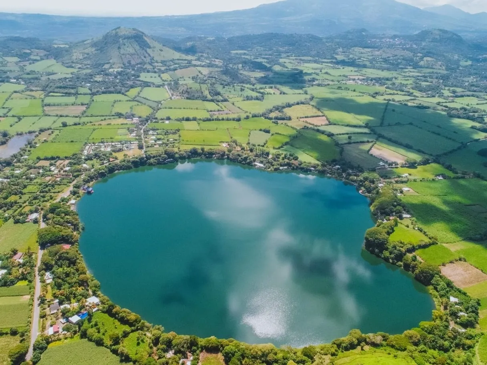
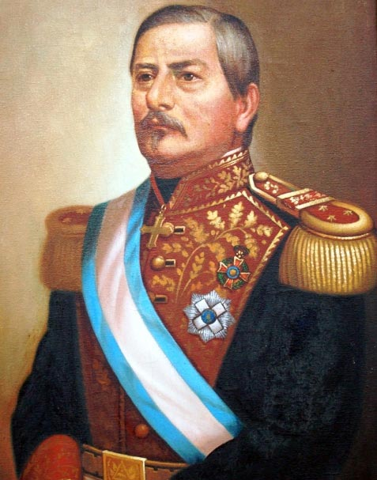

MAPA DE SAN VICENTE

Información
San Vicente es conocido por su diversidad geográfica, ya que posee tanto zonas montañosas, como las de la cordillera del Bálsamo, como costas en el océano Pacífico. Este departamento también tiene una gran riqueza agrícola, destacándose en la producción de café, caña de azúcar, maíz y frijoles.

Datos Históricos
Guerra Civil Salvadoreña (1979-1992) Durante la guerra civil salvadoreña, San Vicente fue uno de los departamentos afectados por la violencia. La región fue escenario de combates entre las fuerzas del gobierno y los guerrilleros del FMLN, aunque no tan intensamente como otros departamentos del país..

Lista de Municipios
- San Vicente
- Apastepeque
- Cuyultitán
- Guadalupe
- Ilobasco
- Jocoro
- San Esteban Catarina
- San Ildefonso
- San Lorenzo
- San Sebastián
- Santa Clara
- Santo Domingo
- Tepetitán
Centros Turísticos
El Centro Histórico de San Vicente tiene una mezcla de arquitectura colonial y moderna. Algunos de los principales puntos de interés incluyen la Iglesia Parroquial de San Vicente y la plaza central, que es un buen lugar para disfrutar del ambiente local y conocer más sobre la historia del lugar. También destaca el Parque Ecológico San Vicente, un espacio ideal para el descanso y la recreación.

Lagos
Uno de los cuerpos de agua más representativos de la región es la Laguna de Apastepeque, un hermoso lago de origen volcánico rodeado de vegetación y fauna silvestre. Es un destino popular para la pesca, paseos en lancha y días de campo en familia.
Ríos
El departamento de San Vicente es atravesado por varios ríos, entre ellos el río Lempa, el más grande de El Salvador, que ofrece paisajes impresionantes y oportunidades para la pesca y el ecoturismo. Otro río importante es el Acahuapa, que atraviesa la ciudad de San Vicente y forma parte de la vida cotidiana de los habitantes.

Volcanes
El Volcán de San Vicente, también conocido como Chinchontepec, es uno de los atractivos naturales más importantes del departamento. Con una altura de 2,130 metros sobre el nivel del mar, ofrece vistas panorámicas espectaculares y es un lugar ideal para el ecoturismo y el senderismo. Sus faldas están cubiertas de bosques y fincas de café, lo que lo convierte en un sitio de gran valor ecológico y económico.

Personajes Célebres
San Vicente ha sido cuna de importantes figuras históricas y culturales. Entre ellos destacan:Gerardo Barrios Expresidente de El Salvador, reconocido por sus reformas progresistas y su defensa del liberalismo en el siglo XIX.
